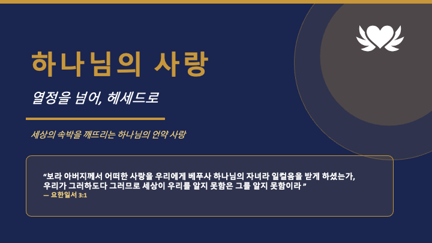

2026.06.28 주일 설교 묵상
열정을 넘어,
헤세드로
실패해도 흔들리지 않는 하나님의 헤세드(인자)를 붙드는 7일의 여정
주일 설교 다시보기
설교 요약: 베드로는 예수님을 세 번 부인했지만, 그 실패가 하나님의 사랑을 끝내지 못했습니다. 하나님의 헤세드(인자)는 우리의 순간적인 열정이 아니라, 흔들림 없이 끝까지 붙드시는 한결같은 사랑입니다. 우리의 신실함이 아니라 그분의 신실하심이 우리를 붙듭니다.
주일 설교 슬라이드
1 / 23

좌우 화살표를 눌러 슬라이드를 넘겨보세요.
매일 이렇게 새로워지세요
- 정직한 인정: 오늘 내 마음의 혼돈·공허·흑암이 무엇인지 숨기지 않고 하나님 앞에 꺼내놓습니다.
- 말씀 읽기: 오늘 주어진 본문과 해설을 천천히 읽으며 주님의 음성을 듣습니다.
- 순종 하나: 마음에 주신 순종할 일을 미루지 않고, 오늘 안에 실제로 행합니다.
- 결단과 체크: 오늘의 결단을 기도로 올려드리고 묵상 완료 체크를 합니다.
요일별 묵상 여정
월요일
제목
성경구절